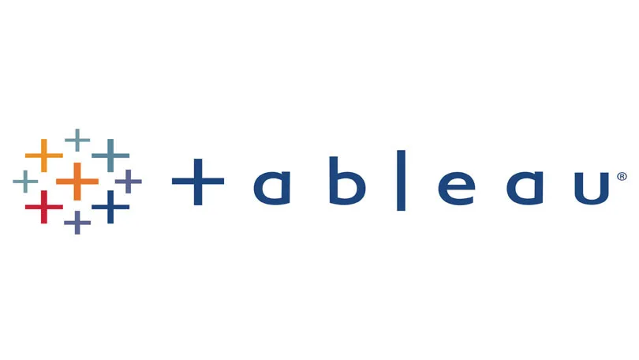
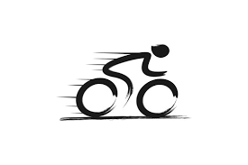
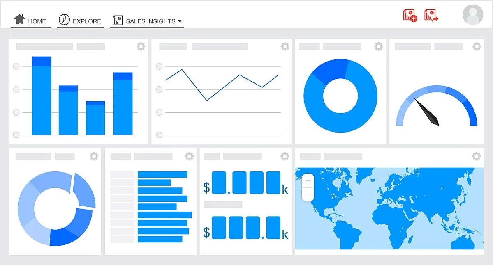
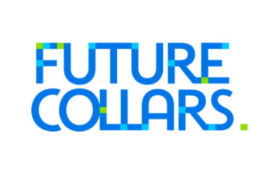

Personal Projects
Covid Project
Project using SQL queries created to analyze a covid dataset and gather information of its impact in Ireland.
View Covid Project
Webscraping
Project using Python to scrape data from an Irish retail company called DID Electrical.
View WebScraping Project
Tableau Dashboard

Project created in Tableau to display information related an AirBnB dataset from 2016.
View Tableau Dashboard
Excel Project

Project using Excel to clean a dataset about Bike Sales and display a dashboard with graphic visualizations.
View Excel Project
SQL Data Cleaning

Project using SQL queries to clean a housing dataset from Nashville.
View SQL Project
College Projects
Artificial Intelligence (AI)
Projects using python to explain and show how the Dijkstra Algorithm and A* algorithm works and how to use machine learning tools such as constraint algorithms.
Open AI Projects Folder
Data Visualization and Communication

Projects using Python to explore and analyze datasets using graphic visualization and Graphic User Interface (GUI).
Open DVC Projects Folder
Future Collars
Python Bootcamp

A 4 months bootcamp focusing on python using PyCharm from the basics to full stack application using flash framework
Open exercises progression folder
About Me
I identify as a dedicated IT Technician actively immersed in the realm of Data Analytics. Inspired by an early exposure to technology through my father's influence, I have cultivated a passion for this field since my formative years. Punctuality and diligence are integral aspects of my professional identity, shaping a mindset that thrives on efficiency.
My journey into analytics is characterized by a natural inclination for problem-solving, complemented by robust organizational skills. What sets me apart is a deep commitment rooted in values and aspiration. The quiet and introverted facets of my personality combine with a high level of focus, adaptability, and a strong work ethic.